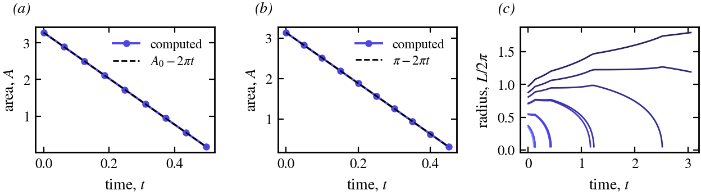
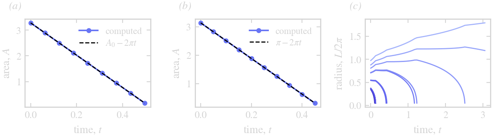

Examples
The scripts in examples/ (an environment of their own: ThetaL by path, DotPlots to draw in the terminal) run a flow and draw it. Run one from the package root:
julia --project=examples examples/coarsening.jl

Curves at successive times, darker earlier: curve shortening of a star, surface diffusion of a flower, anisotropic curve shortening (scaled to equal area: the circle turns into the four-fold Wulff shape), a disk wound into a filament by a vortex, and twelve particles coarsening under a mean field.


(a) Curve shortening removes area at the rate $2\pi$: the star's area against $A_0 - 2\pi t$. (b) So does anisotropic curve shortening, $\int(\gamma + \gamma'')\,d\vartheta = 2\pi$: the area against $\pi - 2\pi t$. (c) The radii $L/2\pi$ of the coarsening particles, coloured by their initial size: the small ones vanish and are removed, the large ones grow, and each vanishing changes the mean field the rest feel.
Geometric flows
mean_curvature_flow.jl: a five-lobed star under $U = -\kappa$ with q -> -q^2 and Δt ∝ 1/max κ², to 95 % of its extinction time $A_0/2\pi$: it turns convex, then round.
surface_diffusion.jl: a four-lobed flower under $U = \kappa_{ss}$ (arclength_derivative twice) with q -> -q^4, relaxing to the circle of the same area; its lobes decay at the rate $q^4 \approx 256$, so the run is short ($t \le 0.02$).
step_control.jl: the same flower with the step chosen from ETDRK2's embedded estimate: small steps through the initial layer, then large ones. It draws the accepted steps, then the curve. See Limits.
anisotropy.jl: $U = -(\gamma + \gamma'')(\vartheta)\kappa$ with $\gamma = 1 + 0.05\cos 4\vartheta$, a symbol (q, X) -> σ read from the curve (the largest stiffness on it), solve on a CurveProblem; the circle turns into the four-fold Wulff shape (drawn scaled to area $\pi$).
Flows
rigid_rotation.jl: a star centred at (1, 0) turning about the origin, $U = u \cdot n$ with $u = 2\pi(-y, x)$, ten steps a turn: the rigid motion is integrated exactly, so the star keeps its shape.
vortex_windup.jl: a disk off the centre of a Lamb–Oseen vortex wound into a spiral (each point turns at $\omega(r)$); N doubles as the filament lengthens and sharpens.
Several curves
coarsening.jl: twelve particles under the mean field $U_i = \bar\kappa - \kappa_i$, $\bar\kappa = \sum\int\kappa\,ds/\sum L$, so every particle's velocity depends on all of them; the integrator is driven by hand, particles are removed with remove_curve! as they vanish (the next step then evaluates the velocities afresh), and remove_area_rate(...; per_curve = false) keeps the total area exact on the grid.